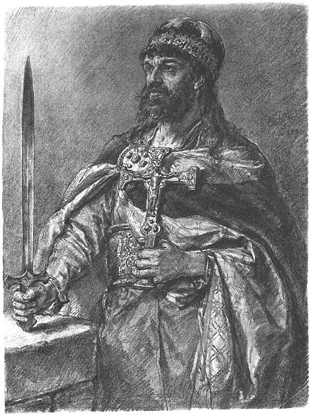

Mieszko I
Mieszko I (ur. 922–945, zm. 25 maja 992) – władca Polski z dynastii Piastów sprawujący władzę od ok. 960 roku. Ojciec Bolesława I Chrobrego, Świętosławy-Sygrydy, Mieszka, Lamberta i Świętopełka. Brat Czcibora. Po kądzieli dziadek Kanuta Wielkiego.
 Mieszko I to historyczny pierwszy władca Polan, uważany zarazem za faktycznego twórcę państwowości polskiej. Kontynuował politykę swojego ojca i dziadka, którzy jako władcy pogańskiego księstwa znajdującego się na terenach obecnej Wielkopolski, poprzez sojusze lub siłę militarną podporządkowali sobie Kujawy oraz prawdopodobnie Pomorze Wschodnie i Mazowsze. Przez większość okresu swojego panowania toczył walki o Pomorze Zachodnie, zajmując je po rzekę Odrę. W ostatnich latach życia przystąpił także do wojny z Czechami, zdobywając Śląsk i prawdopodobnie Małopolskę.
Poprzez ślub w 965 roku z Dobrawą Przemyślidką i przyjęcie chrztu w 966 roku Mieszko włączył swoje państwo w zachodni krąg kultury chrześcijańskiej. Oprócz podbojów duże znaczenie dla przyszłości księstwa Polan miały także jego reformy wewnętrzne, mające na celu rozbudowę i usprawnienie państwa.
Zachowane źródła pozwalają twierdzić, że Mieszko I był sprawnym politykiem, utalentowanym wodzem i charyzmatycznym władcą. Prowadził zręczne działania dyplomatyczne, zawierając sojusz wpierw z Czechami, a następnie ze Szwecją i Cesarstwem. W polityce zagranicznej kierował się przede wszystkim racją stanu, wchodząc w układy nawet ze swoimi wcześniejszymi wrogami. Synom pozostawił państwo o znacznie wyższej pozycji w Europie i przynajmniej podwojonym terytorium.
W przeszłości władca był także opisywany przy użyciu błędnie rekonstruowanego imienia „Mieczysław”, a etymologia imienia „Mieszko” wciąż nie została jednoznacznie wyjaśniona.
Źródło: Wikipedia (https://pl.wikipedia.org/wiki/Mieszko_I)